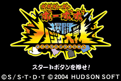

Boboboubo Boubobo - Bakutou Hajike Taisen (Japan)
Stateless / Passcode Debug Menu Patch 📺 Joybus 💾 MultiBoot 🎮 4P Link
Cartridge Identity
- Game Code
BOSJ(FamilyBOS)- Header Title
BO_BOBO4_GBA- Maker / Revision
18/ rev0- ROM Size
- 16.0 MiB (16,777,216 B)
- Save Media
None / Unknown- SHA-256
5ca196c5265ae19f611d3380e0700312199d3be26247967d00cc05412a461965- Engine / SDK Group
comm-001(196 families)
Screenshots

Debug Menu Re-Enablement Patch (.ips)
Download BOSJ-debug.ips (15 B IPS / 2 B delta)
- Hook Mechanism
thumb_imm_scene_override· Patch main scene dispatcher at 0x08001904 (ldrb r1,[r5] -> movs r1,#4) to select scene table slot 4 (0x080216f1 -> developer character select / debug menu)- IPS SHA-256
fc022c45898aa764255a28521291010eca8fee54ed55b4ce50a07e1cc8eeec87
gbakit patch apply BOSJ-debug.ips original.gba patched-debug.gbaLink Cable & Multiplayer Communications
This title contains detected communication capabilities: 📺 Joybus 💾 MultiBoot 🎮 4P Link.
Detailed protocol specifications, SIO registers, Joybus commands, and MultiBoot sequences are documented in the Link & Multiplayer Reference.
- Multi-Player SIO (4P)
- 16-bit ring network · SIOCNT (
0x04000128) literals:0x003d30,0x003db0,0x003ddc· SIODATA32/SIOMULTI0 (0x04000120) literals:0x00414c,0x043ffc,0x044518 - GameCube Joybus
- Register literal
REG_JOYCNT(0x04000140) at offset0x051e74 - GameCube Joybus
- Register literal
REG_JOY_RECV(0x04000150) at offset0x051e0c - GameCube Joybus
- Register literal
REG_JOY_RECV(0x04000150) at offset0x051e78 - GameCube Joybus
- Register literal
REG_JOY_TRANS(0x04000154) at offset0x051ad0 - GameCube Joybus
- Register literal
REG_JOY_TRANS(0x04000154) at offset0x051ae8 - GameCube Joybus
- Register literal
REG_JOYSTAT(0x04000158) at offset0x051ab4 - GameCube Joybus
- Register literal
REG_JOYSTAT(0x04000158) at offset0x051e7c - Single-Cart MultiBoot
- Single-Cartridge MultiBoot (Download Play) client/server handler · Thumb SWI 0x25 (
0xDF25):0x18b138,0x5a080e,0x5b81f6,0x5d11b6
Cartridge Storage Architecture: Stateless / Passcode
Zero non-volatile battery hardware: This cartridge PCB contains ROM only (no SRAM, Flash, or EEPROM chips). Progression is preserved via on-screen passcodes or session-only gameplay. No
.sav file is generated or required.
ROM Assets, Compression & Audio
- BIOS Compression
- LZ77 (
0x10): 2,229 streams · RLE (0x30): 1 streams - ROM Pointer Tables
- 112 tables (8 pointing to validated compressed streams)
- SDK Backup Tags
SRAM_V113
Asset Map (formatkit.asset-map.v1)
Download BOSJ-r0-5ca196c5265ae19f.asset-map.json.gz (302,031 B (295.0 KiB)) Verified PASS · 6.31% coverage
| Metric | Bytes / Value | Entries |
|---|---|---|
| Identified | 795,785 B (777.1 KiB) (4.74%) | 3,033 |
| Mapped | 0 B (0.00%) | 0 |
| Opaque | 262,616 B (256.5 KiB) (1.57%) | 1 |
| Unknown | 15,718,815 B (14.99 MiB) (93.69%) | 2,926 |
| Total ROM Size | 16,777,216 B (16.00 MiB) | 5,960 |
| Coverage % | 6.31% | — |
| Entries w/ Code Refs | 3,302 / 5,960 (55.40%) | — |
Top Identified Formats: gfx.gba-palette (2,228 · 384,736 B (375.7 KiB)) · compress.bios-lz77 (802 · 383,987 B (375.0 KiB)) · compress.bios-huffman (1 · 23,198 B (22.7 KiB)) · audio.m4a-song-table (1 · 3,672 B (3.6 KiB)) · gba.rom-header (1 · 192 B)
Largest unknown Extents (Headerless / Custom Asset Candidates)
| Offset | Size | Shannon Entropy | Code Refs |
|---|---|---|---|
0x00A108C0 | 1,152,360 B (1.10 MiB) | 6.357 bits/B | 0 |
0x008922A4 | 682,636 B (666.6 KiB) | 6.778 bits/B | 0 |
0x00938D50 | 561,236 B (548.1 KiB) | 6.261 bits/B | 0 |
0x0075D610 | 527,632 B (515.3 KiB) | 6.658 bits/B | 0 |
0x00B3DAAC | 526,448 B (514.1 KiB) | 6.129 bits/B | 0 |
gzip -dk BOSJ-r0-5ca196c5265ae19f.asset-map.json.gz && gbakit map verify rom.gba BOSJ-r0-5ca196c5265ae19f.asset-map.json
gbakit assets export rom.gba --asset-map BOSJ-r0-5ca196c5265ae19f.asset-map.json -o out/Text, Fonts & Scene Data
- Primary Text Encoding
- 16-bit / UTF-16LE text (
79ASCII strings ·5Shift-JIS runs) - Font & VWF Indicators
- VWF Width Table 1bpp Font · BIOS SWIs: BitUnPack
0x10:0· LZ770x11/12:26· Huffman0x13:2· RLE0x14/15:3 - Scene & Packaging
22ROM pointer tables (≥32 entries,6≥200) ·49relativeu32TOCs ·311OAM metasprite hits
Hardware MMIO Subsystems
ppu_display0x8002108save_bus_sram_flash0x8002514,0x800276c